Chapter 5 Desarrollo actividad 4 Implementación Holt - Winter
Teniendo en cuenta el análisis exhaustivo realizado por el grupo pudimos identificar que el método Holt - Winter del paquete Forecast está mas actualizado que en la librería TSA. Por otra parte, permite generar pronósticos y métricas de evaluación directamente con objetos tipo forecast y es el estándar moderno en modelado predictivo de series temporales en R. Por consiguiente, desarrollamos la actividad con el paquete Forecast y no con la libreria TSA.
Las predicciones y mediciones de MAE, RMSE, MAPE; se encuentran por debajo de los gráficos.
5.1 Funciones y lógicas implementadas
Code
# Lista para guardar resultados
resultados_hw <- list()
metricas_hw <- data.frame(
Indice = character(),
MAE = numeric(),
RMSE = numeric(),
MAPE = numeric(),
stringsAsFactors = FALSE
)
# Función para ajustar modelo Holt-Winters, graficar y guardar métricas
ajustar_holt_winters <- function(serie_ts, nombre_indice) {
if (length(serie_ts) < 30) {
cat("Serie demasiado corta para aplicar Holt-Winters:", nombre_indice, "\n")
return(NULL)
}
modelo_hw <- tryCatch({
HoltWinters(serie_ts)
}, error = function(e) {
cat("Error en Holt-Winters para", nombre_indice, ":", e$message, "\n")
return(NULL)
})
if (!is.null(modelo_hw)) {
# Gráfico del modelo ajustado
plot(modelo_hw, main = paste("Modelo Holt-Winters -", nombre_indice))
# Pronóstico a 30 días
pred_hw <- forecast(modelo_hw, h = 30)
plot(pred_hw, main = paste("Pronóstico Holt-Winters (30 días) -", nombre_indice))
# Guardar resultados
resultados_hw[[nombre_indice]] <<- list(modelo = modelo_hw, pronostico = pred_hw)
# Evaluación en el ajuste (no en el forecast)
obs <- as.numeric(serie_ts)
pred <- as.numeric(modelo_hw$fitted[,1]) # fitted values
# Calcular métricas
mae <- mae(obs, pred)
rmse_val <- rmse(obs, pred)
mape_val <- mape(obs, pred) * 100 # porcentaje
metricas_hw <<- rbind(metricas_hw, data.frame(
Indice = nombre_indice,
MAE = round(mae, 2),
RMSE = round(rmse_val, 2),
MAPE = round(mape_val, 2)
))
}
}5.2 Implementar modelo en todas las series de tiempo
Code
## Error en Holt-Winters para SP500 : fallo de optimización 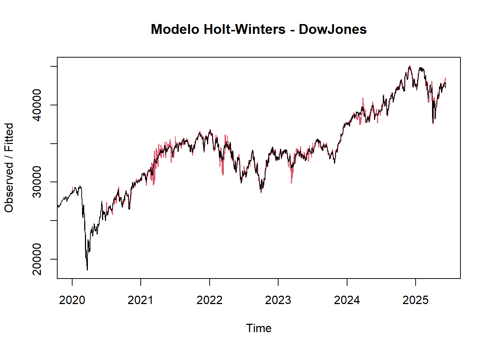
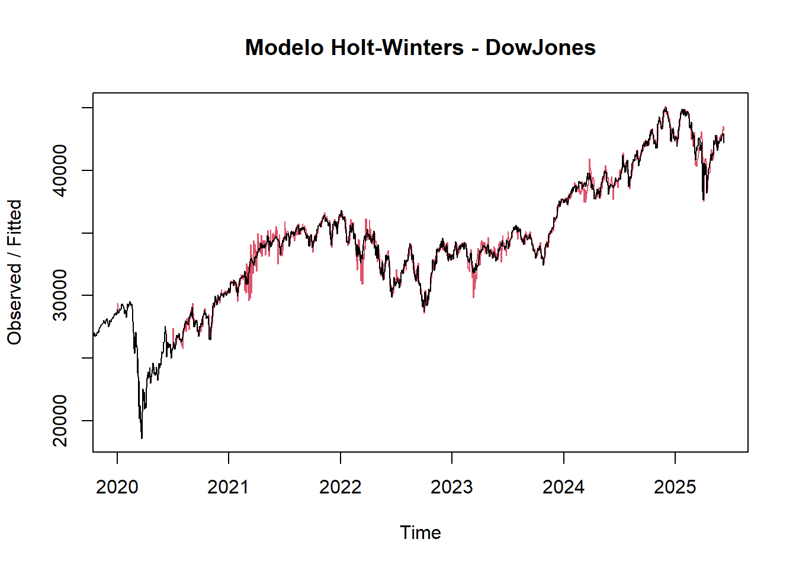 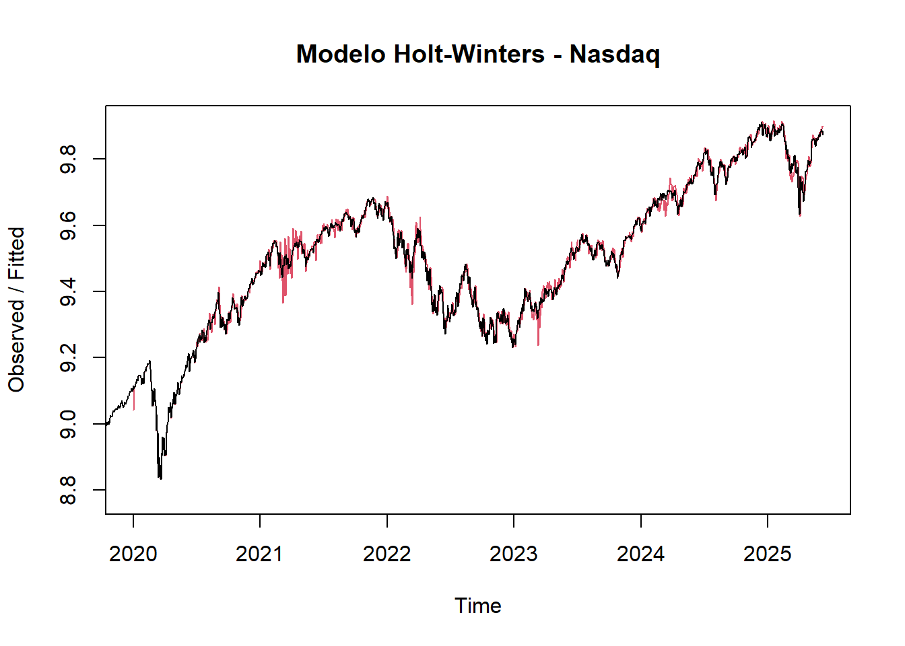
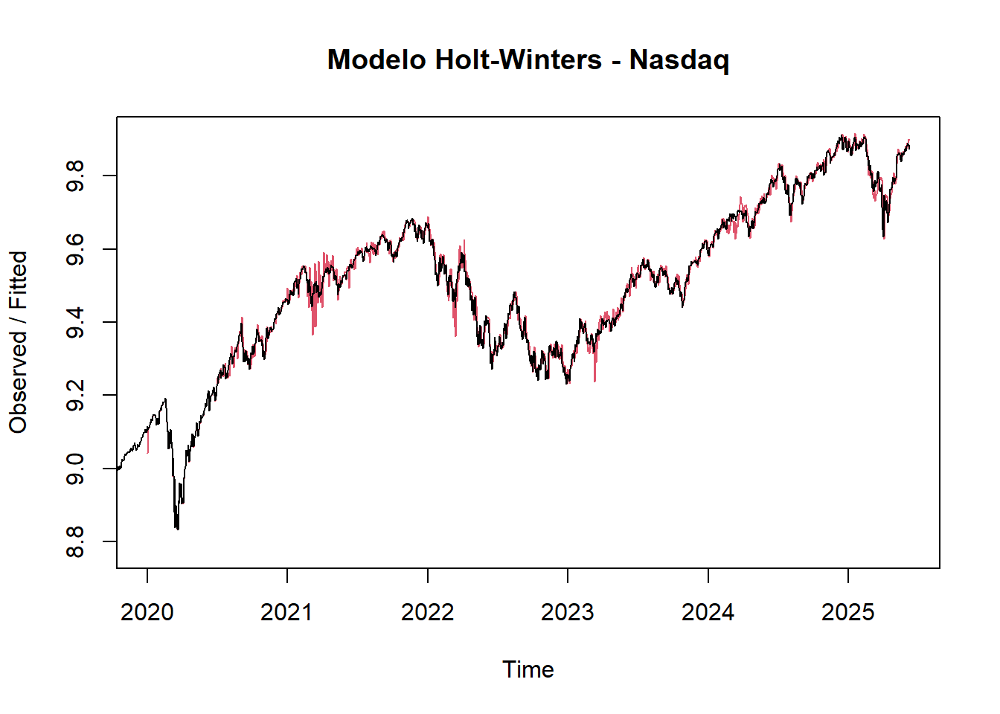 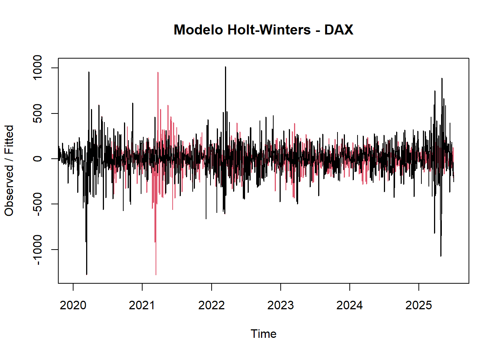
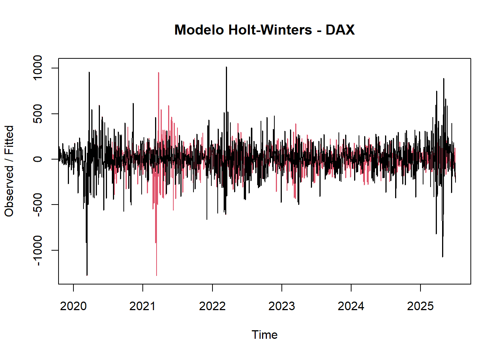

 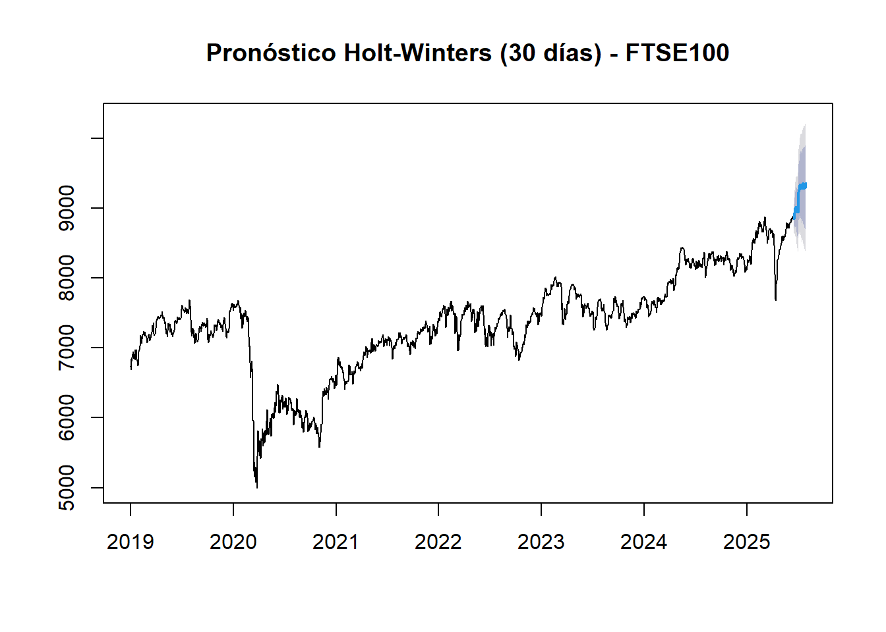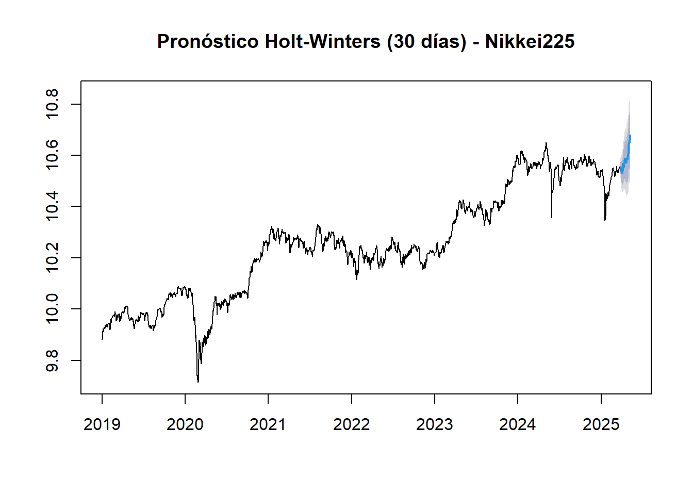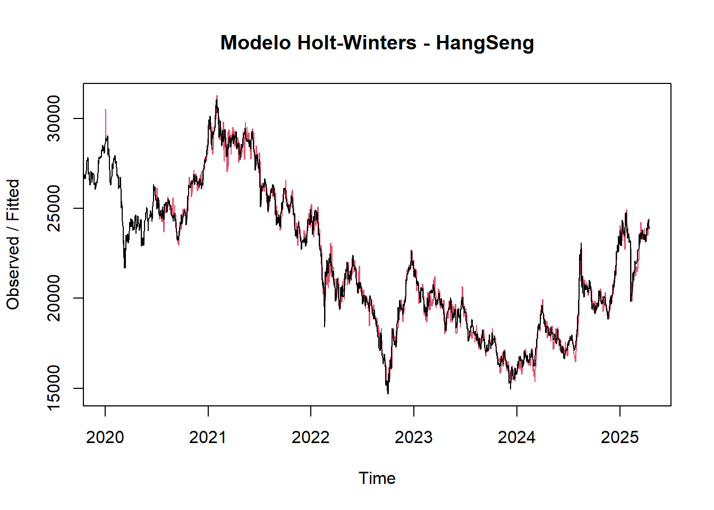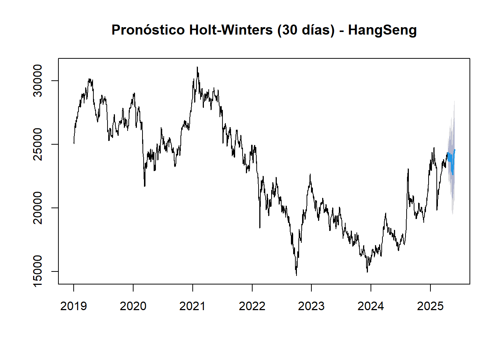
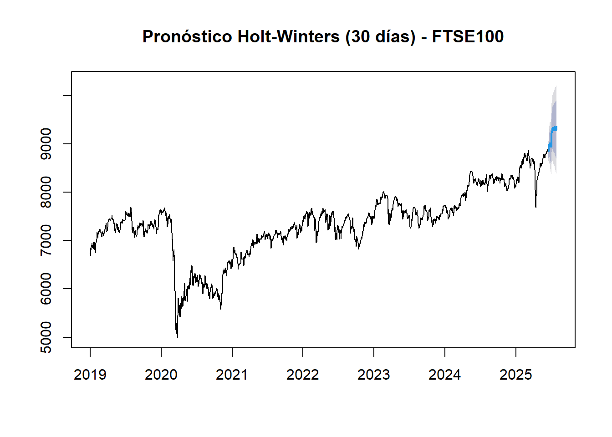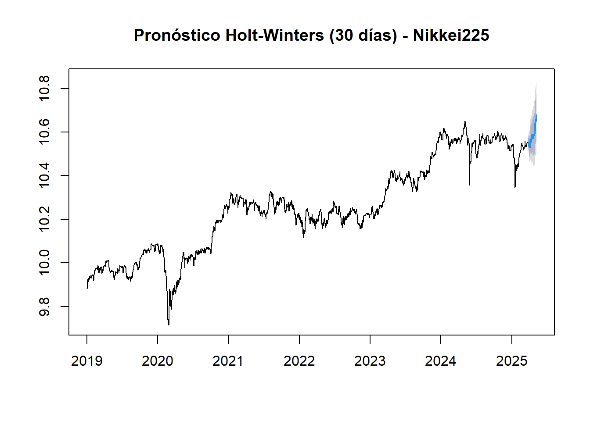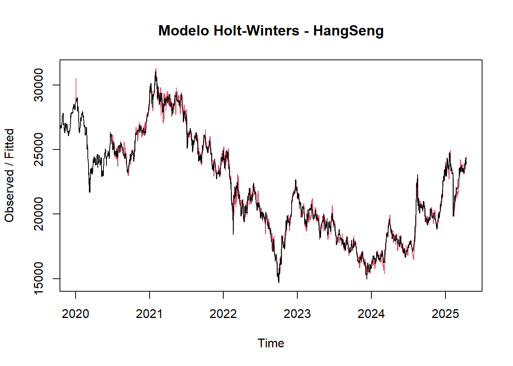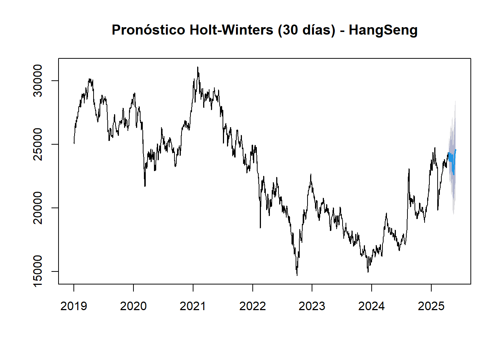
5.3 Resultados predicción
El modelo Holt-Winters permitió generar predicciones a corto plazo razonablemente precisas para la mayoría de los índices, los mejores desempeños se observaron en los mercados de EE.UU. y Japón, mientras que los índices europeos y asiáticos mostraron mayor incertidumbre.La tabla presentada muestra el pronóstico diario para los próximos 30 días de cada uno de los índices bursátiles, basado en el modelo Holt-Winters ajustado previamente. A continuación, se destacan los principales hallazgos:
1. SP500, Nasdaq y Nikkei225
Las predicciones muestran una evolución estable y creciente, en línea con la tendencia positiva observada en el ajuste histórico.Dado que estos índices fueron transformados logarítmicamente, los valores están en escala log (por ejemplo, 8.7 en SP500 ≈ exp(8.7) ≈ 6,000 puntos).La suavidad de las predicciones refleja alta confianza del modelo, coherente con su bajo error (MAPE < 3%).
2. DowJones
Presenta un comportamiento consistentemente ascendente, alcanzando valores proyectados por encima de 44,000 puntos,este patrón respalda la tendencia alcista de largo plazo observada en el análisis exploratorio;sin embargo, su MAPE fue de 16.9%, lo que sugiere que las predicciones deben interpretarse con precaución moderada.
3. CAC40 y FTSE100
Exhiben una trayectoria positiva con leves oscilaciones, lo cual refleja cierta estacionalidad capturada por el modelo, las predicciones se mantienen dentro de un rango realista, entre 7,700 y 9,100 puntos.Muestra un balance entre crecimiento y estabilización tras periodos volátiles.
4. DAX
A diferencia de otros índices, muestra una gran variabilidad y valores negativos ocasionales en la proyección.Esto indica que el modelo Holt-Winters no logró capturar adecuadamente la dinámica del índice alemán, posiblemente por la forma en que se transformó y/o diferenció la serie.
5. HangSeng y Shanghai Composite
Ambos índices presentan predicciones ligeramente crecientes, lo que sugiere un posible cambio de dirección frente a la caída previa; sin embargo, las fluctuaciones son más intensas (especialmente en HangSeng), reflejando su naturaleza volátil.La precisión de estos modelos fue moderada (MAPE entre 8% y 16%).
Code
# Crear tabla con pronóstico de los próximos 30 días para cada índice
# Inicializamos la tabla vacía
tabla_forecast_30 <- data.frame(Dia = 1:30)
# Agregamos cada columna de pronóstico
for (indice in names(resultados_hw)) {
pred <- resultados_hw[[indice]]$pronostico
tabla_forecast_30[[indice]] <- round(as.numeric(pred$mean), 2)
}
# Mostrar tabla en formato limpio
knitr::kable(
tabla_forecast_30,
caption = "Predicción de los próximos 30 días por índice bursátil usando modelo Holt-Winters"
)| Dia | DowJones | Nasdaq | DAX | CAC40 | FTSE100 | Nikkei225 | HangSeng | ShanghaiComposite |
|---|---|---|---|---|---|---|---|---|
| 1 | 41793.54 | 9.85 | -14.17 | 7724.12 | 8756.11 | 10.54 | 23515.06 | 3305.26 |
| 2 | 41830.11 | 9.85 | -13.25 | 7834.47 | 8817.70 | 10.53 | 23716.00 | 3288.00 |
| 3 | 42096.02 | 9.86 | -96.94 | 7946.59 | 8858.04 | 10.50 | 24235.03 | 3220.53 |
| 4 | 42273.71 | 9.86 | -63.36 | 8002.45 | 8902.18 | 10.48 | 24333.81 | 3181.39 |
| 5 | 42653.79 | 9.87 | -57.51 | 8032.20 | 8915.71 | 10.47 | 24373.07 | 3138.58 |
| 6 | 42902.53 | 9.87 | 53.12 | 8032.31 | 8979.87 | 10.49 | 24564.37 | 3110.72 |
| 7 | 43206.61 | 9.88 | -101.24 | 8012.02 | 9050.79 | 10.51 | 24544.46 | 3116.56 |
| 8 | 43099.21 | 9.88 | 13.00 | 8000.91 | 9131.28 | 10.53 | 24278.60 | 3064.30 |
| 9 | 43309.18 | 9.89 | 85.60 | 7966.07 | 9165.75 | 10.54 | 24439.44 | 3076.19 |
| 10 | 43531.33 | 9.90 | 5.70 | 7940.46 | 9134.30 | 10.55 | 24485.45 | 3107.35 |
| 11 | 43688.48 | 9.89 | -11.99 | 7977.74 | 9077.59 | 10.54 | 24172.87 | 3102.10 |
| 12 | 44056.06 | 9.89 | -86.57 | 7971.84 | 8997.77 | 10.55 | 24062.43 | 3125.04 |
| 13 | 44615.68 | 9.91 | 128.48 | 7940.20 | 8915.85 | 10.56 | 23972.63 | 3123.33 |
| 14 | 44715.23 | 9.92 | -206.53 | 7955.99 | 8890.43 | 10.55 | 24116.02 | 3133.53 |
| 15 | 44621.17 | 9.92 | -145.48 | 7924.98 | 8891.40 | 10.56 | 24325.71 | 3119.91 |
| 16 | 43797.83 | 9.90 | 8.62 | 7906.21 | 8956.11 | 10.56 | 24626.26 | 3139.36 |
| 17 | 43187.99 | 9.89 | -21.35 | 7963.94 | 8987.34 | 10.55 | 24728.40 | 3138.01 |
| 18 | 43234.93 | 9.89 | -96.12 | 7960.38 | 9038.21 | 10.54 | 24215.86 | 3166.40 |
| 19 | 43414.74 | 9.90 | 76.86 | 7950.55 | 9023.97 | 10.54 | 24083.73 | 3180.75 |
| 20 | 43434.81 | 9.90 | -28.24 | 7937.59 | 9062.80 | 10.54 | 24108.38 | 3183.39 |
| 21 | 43400.63 | 9.91 | 61.92 | 7945.55 | 9041.66 | 10.55 | 24046.32 | 3172.31 |
| 22 | 43597.41 | 9.92 | -49.49 | 7865.79 | 9015.26 | 10.56 | 24401.18 | 3157.32 |
| 23 | 43448.83 | 9.92 | 63.81 | 7836.43 | 8979.95 | 10.58 | 24592.71 | 3177.83 |
| 24 | 43556.84 | 9.93 | 17.42 | 7874.47 | 9010.77 | 10.57 | 24632.69 | 3182.84 |
| 25 | 43533.29 | 9.93 | -29.17 | 7753.95 | 8987.12 | 10.56 | 24527.46 | 3186.71 |
| 26 | 43348.77 | 9.93 | -12.31 | 7670.21 | 9112.56 | 10.58 | 24346.74 | 3189.50 |
| 27 | 42981.38 | 9.91 | -186.25 | 7611.59 | 9277.18 | 10.59 | 24055.99 | 3213.62 |
| 28 | 42992.19 | 9.91 | 111.17 | 7587.34 | 9309.82 | 10.60 | 24017.72 | 3203.08 |
| 29 | 43037.39 | 9.91 | 92.42 | 7648.56 | 9348.72 | 10.60 | 24397.97 | 3195.50 |
| 30 | 43159.96 | 9.92 | 53.82 | 7631.27 | 9381.61 | 10.59 | 24466.80 | 3200.22 |
5.4 Tabla de resumen
Se calcula el error absoluto medio(MAE), la raiz del error cuadratico medio(RMSE) y el error porcentual medio absoluto(MAPE).
1. Modelos con excelente ajuste:
*SP500, Nasdaq y Nikkei225 tienen errores muy bajos:
*MAE y RMSE < 1
*MAPE menor a 3%
Esto indica que el modelo Holt-Winters representa muy bien la estructura interna de estas series.
2. Modelos aceptables pero con errores moderados:
*ShanghaiComposite: MAPE de 8.68% → aceptable
*FTSE100 y CAC40: alrededor del 12-16%
3. Modelos con alto error:
*DowJones y HangSeng tienen MAPE de 16.9% → error alto
*DAX tiene MAPE de 392% → esto es un claro problema.
Code
| Indice | MAE | RMSE | MAPE |
|---|---|---|---|
| DowJones | 5724.54 | 7515.53 | 16.86 |
| Nasdaq | 0.30 | 0.35 | 3.15 |
| DAX | 99.59 | 168.53 | 386.74 |
| CAC40 | 1041.58 | 1334.47 | 16.64 |
| FTSE100 | 896.66 | 1143.28 | 12.11 |
| Nikkei225 | 0.21 | 0.27 | 2.01 |
| HangSeng | 3721.47 | 4491.59 | 16.78 |
| ShanghaiComposite | 270.83 | 324.22 | 8.67 |